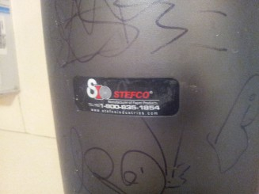

George Lucas's creation of R2-D2 was influenced by Akira Kurosawa's 1958 feature film The Hidden Fortress (USA release 1962), particularly Tahei and Matashichi, the two comic relief characters that serve as sidekicks to General Makabe. Lucas and artist
Ralph McQuarrie also drew inspiration from the robots Huey, Dewey, and Louie from Douglas Trumbull's 1972 film Silent Running.